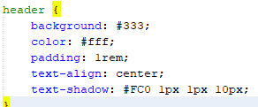
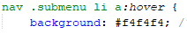

PROPIEDADES SEGÚN LAS ETIQUETAS
body
font-family: Especifica la familia de fuentes para el texto del documento. En este caso, se utiliza Arial como fuente principal y sans-serif como respaldo.
line-height: Define la altura de la línea del texto. Un valor de 1.6 significa que la altura de la línea es 1.6 veces el tamaño de la fuente.
margin: Elimina todos los márgenes predeterminados del navegador configurándolos a 0.
padding: Elimina todo el relleno predeterminado del navegador configurándolo a 0.
header
background: Establece el color de fondo del encabezado. En este caso, se usa #333 (un tono oscuro de gris).
color: Establece el color del texto en el encabezado. Aquí se usa #fff (blanco).
padding: Aplica un relleno de 1rem alrededor del contenido del encabezado.
text-align: Centra el texto dentro del encabezado.

nav
background: Establece el color de fondo de la barra de navegación. En este caso, se usa #f4f4f4 (un tono claro de gris).
padding: Aplica un relleno de 1rem alrededor del contenido de la barra de navegación.
text-align: Centra el texto dentro de la barra de navegación.
nav ol
list-style: Elimina el estilo de lista predeterminado (los números) configurándolo a none.
padding: Elimina el relleno predeterminado configurándolo a 0.
nav ol li
display: Muestra los elementos de la lista en línea (inline-block), permitiendo que se alineen horizontalmente.
margin-right: Aplica un margen derecho de 1rem para separar los elementos de la lista.
position: Establece el posicionamiento relativo, lo que es necesario para posicionar los submenús relativos a los elementos principales.
nav ol li a
color: Establece el color del texto del enlace a #333 (un tono oscuro de gris).
text-decoration: Elimina la decoración del texto (el subrayado) configurándolo a none.
nav ol li:hover .submenu
display: Configura la propiedad de visualización a block para mostrar el submenú cuando se pasa el ratón sobre el elemento li.
nav .submenu
display: Inicialmente oculta el submenú configurándolo a none.
position: Establece el posicionamiento absoluto para colocar el submenú relativo a su elemento contenedor.
top: Coloca el submenú inmediatamente debajo del elemento principal configurando top a 100%.
left: Alinea el submenú a la izquierda del elemento contenedor configurando left a 0.
background: Establece el color de fondo del submenú a #fff (blanco).
border: Aplica un borde de 1px de ancho y color #ccc (gris claro).
list-style: Elimina el estilo de lista predeterminado configurándolo a none.
padding: Elimina el relleno predeterminado configurándolo a 0.
margin: Elimina el margen predeterminado configurándolo a 0.
z-index: Establece la propiedad z-index a 1000 para asegurar que el submenú se superponga a otros elementos en la página.
nav .submenu li
margin: Elimina el margen predeterminado configurándolo a 0.
nav .submenu li a
display: Configura la visualización a block para que los enlaces ocupen todo el ancho del contenedor.
padding: Aplica un relleno de 0.5rem 1rem alrededor del texto del enlace.
color: Establece el color del texto del enlace a #333 (un tono oscuro de gris).
text-decoration: Elimina la decoración del texto (el subrayado) configurándolo a none.
white-space: Evita el salto de línea configurándolo a nowrap.
nav .submenu li a:hover
background: Cambia el color de fondo a #f4f4f4 (un tono claro de gris) cuando se pasa el ratón por encima.

main
padding: Aplica un relleno de 1rem alrededor del contenido principal.
section
margin-bottom: Aplica un margen inferior de 2rem para separar las secciones.
h2
color: Establece el color del texto del encabezado a #333 (un tono oscuro de gris).
footer
background: Establece el color de fondo del pie de página a #333 (un tono oscuro de gris).
color: Establece el color del texto en el pie de página a #fff (blanco).
padding: Aplica un relleno de 1rem alrededor del contenido del pie de página.
text-align: Centra el texto dentro del pie de página.
position: Establece la posición fija del pie de página para que permanezca en la parte inferior de la ventana del navegador.
bottom: Coloca el pie de página en la parte inferior de la ventana configurando bottom a 0.
width: Establece el ancho del pie de página al 100% del ancho de la ventana del navegador.